Colonne de la Grande Armée d'Austerlitz (Vendôme)
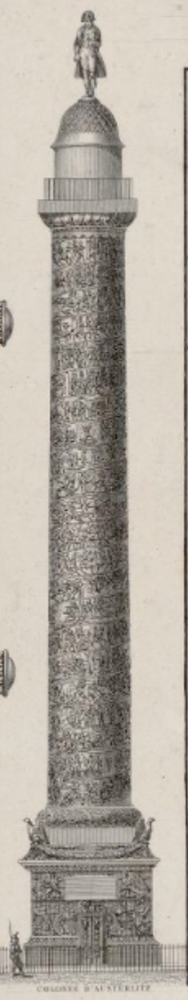
La France actuelle et ses anciens défenseurs
Origine inconnue
Fontaine du palmier (de la victoire)
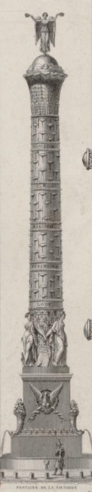
Masséna
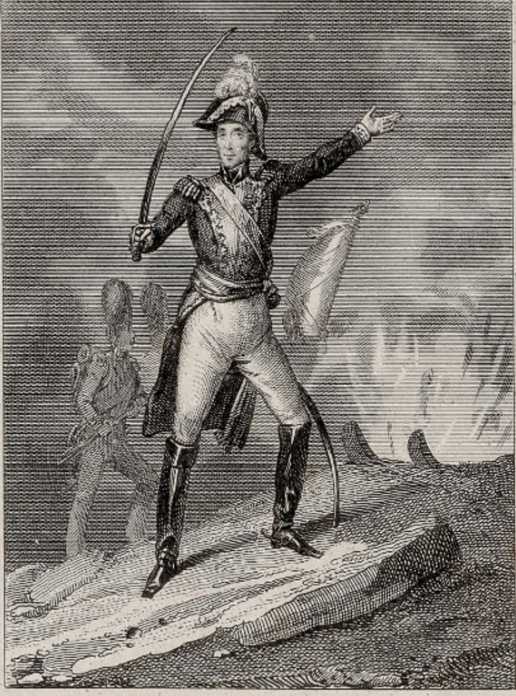
Cambronne
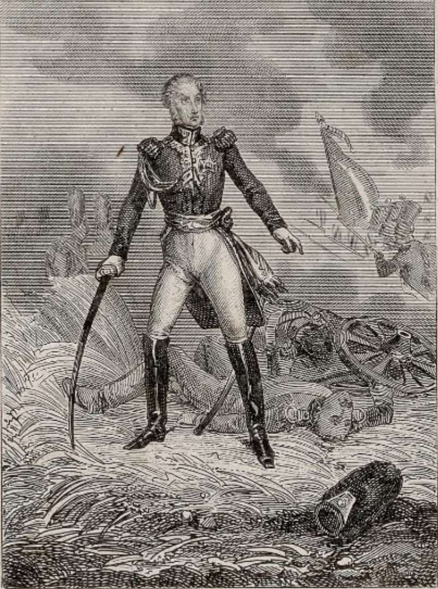
Brune
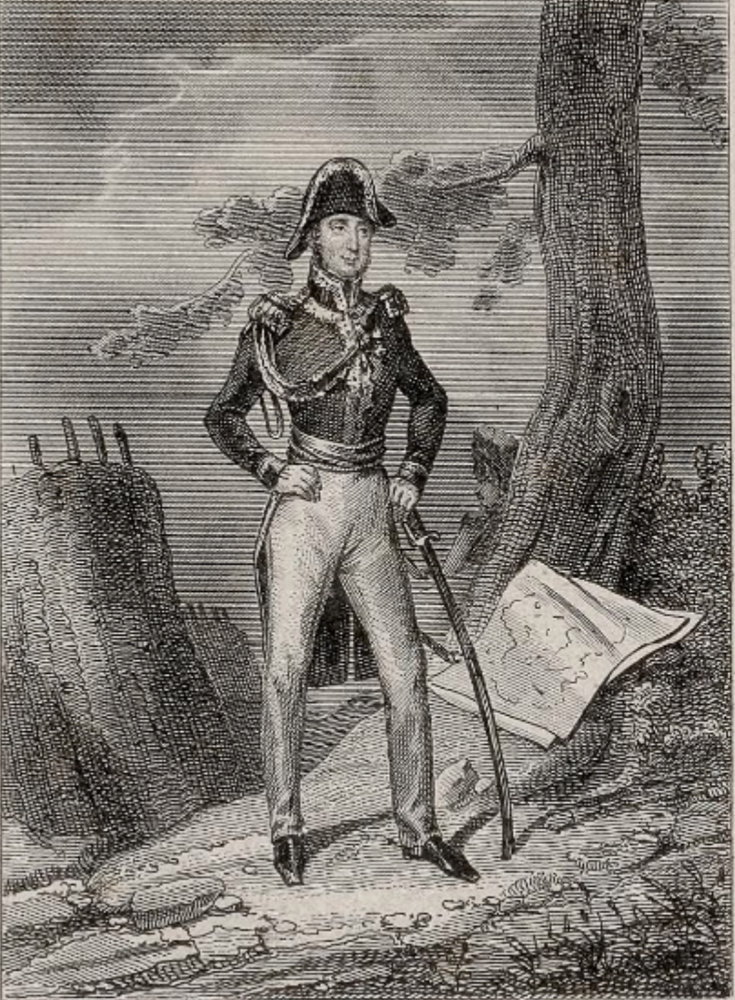
Poniatowski
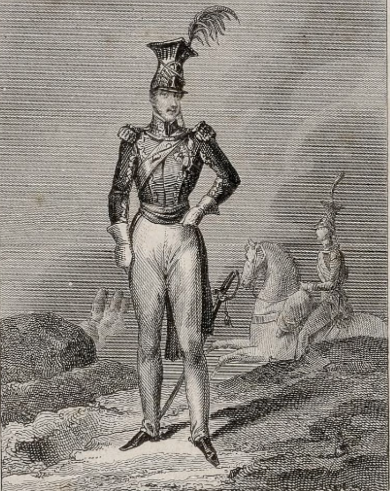
Desaix
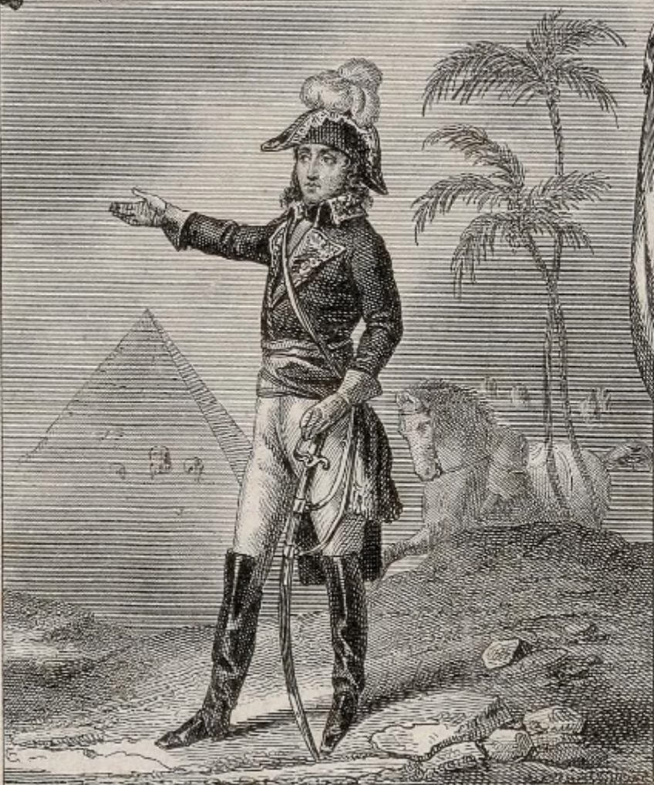
Hoche
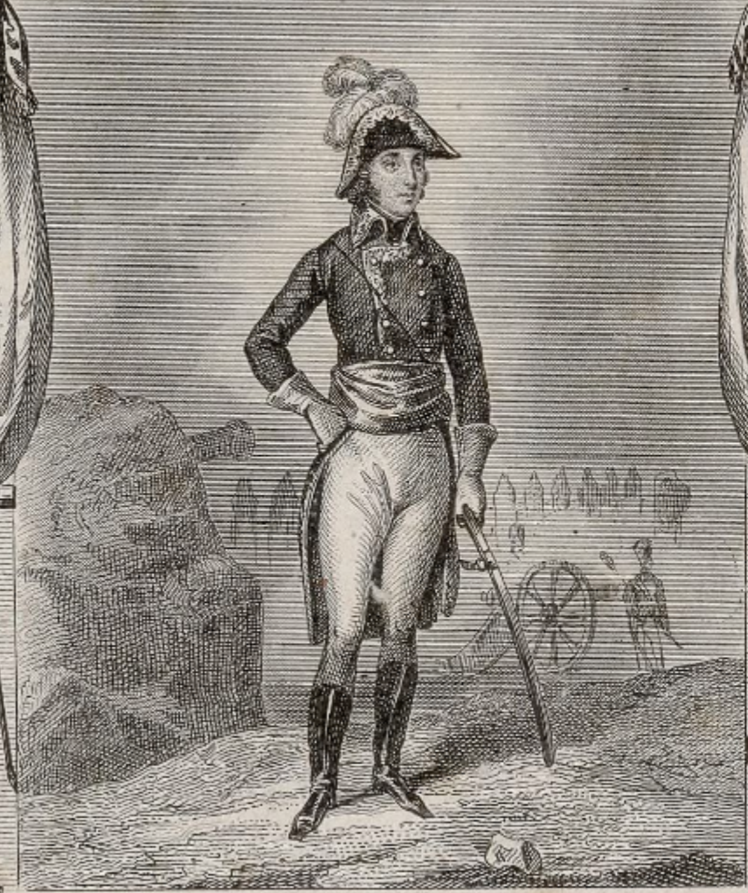
Lasalle
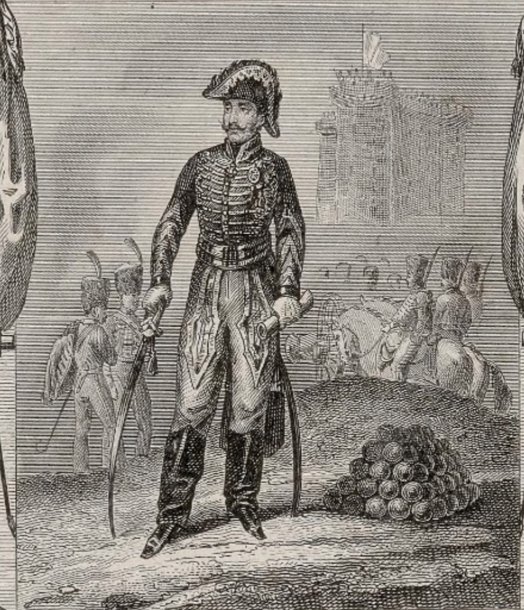
Marceau
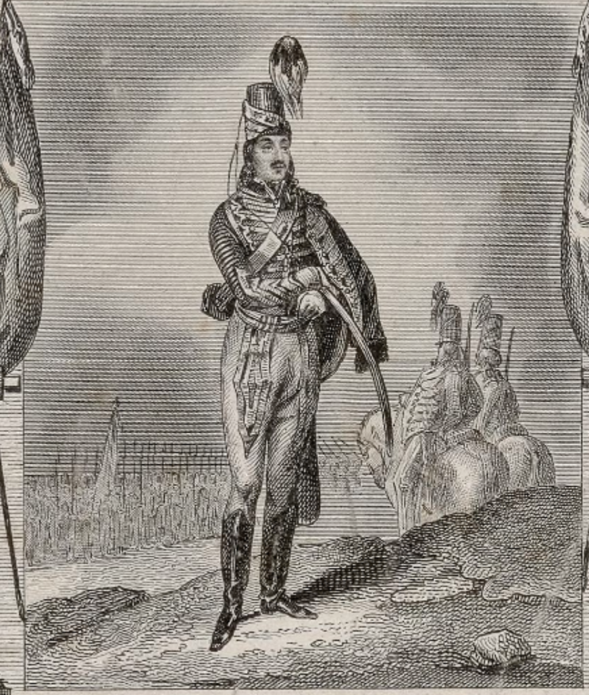
Berthier
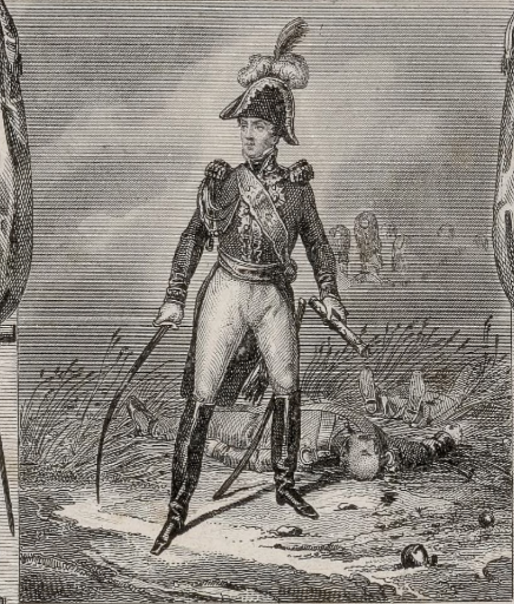
Junot
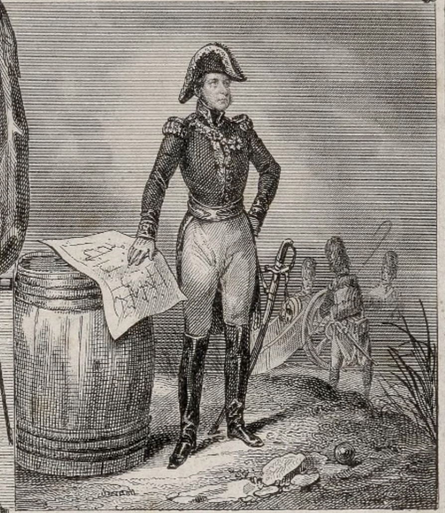
Daumesnil
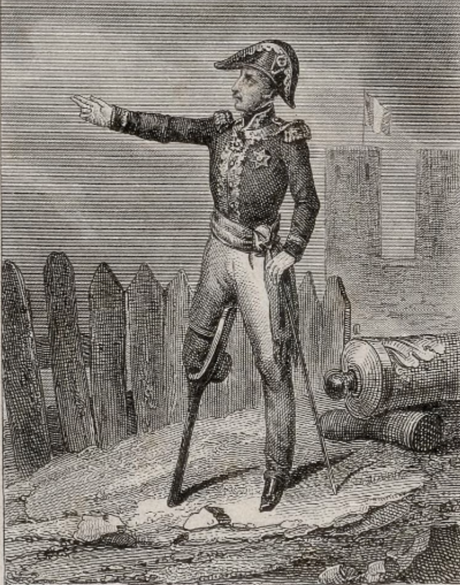
La France actuelle et ses anciens défenseurs.
Carte de France physique et administrative / dressée par P. Tardieu ; Victor Adam del. ; Montaut et Houiste sculp. (1838)
Tardieu, Pierre Antoine (1784-1869). Cartographe; Adam, Victor (1801-1866). Dessinateur; Montaut, Gabriel Xavier de (1798-185.). Graveur; Houiste, François. Graveur
Binet (Paris) éditeur. Format : 1 carte : ill., tracés col. ; 26 x 36 cm, sur cuvette 55 x 70,5 cm, sur flle 63 x 76 cm
Source : Bibliothèque nationale de France, département Cartes et plans, GE C-6241. Référence Gallica, lié au catalogue de la BNF.